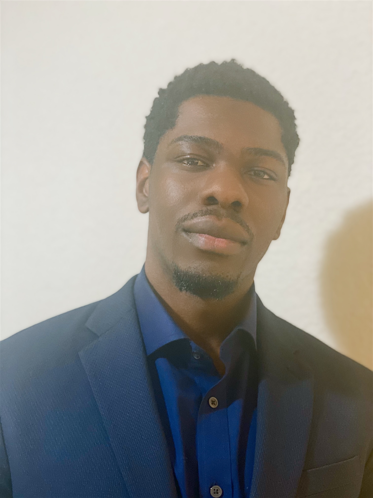
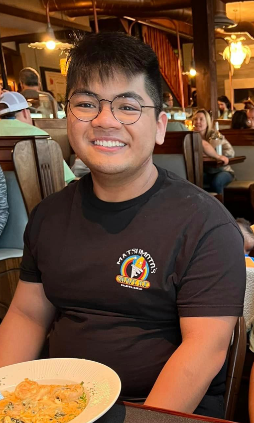
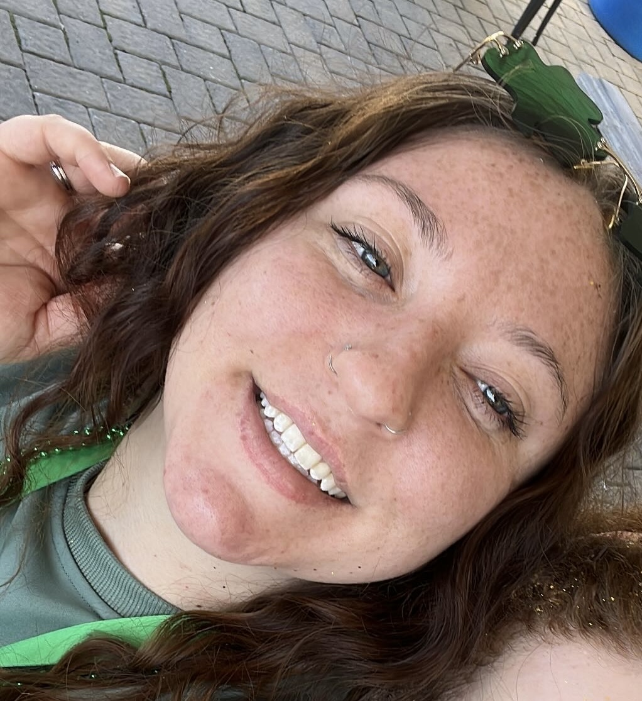
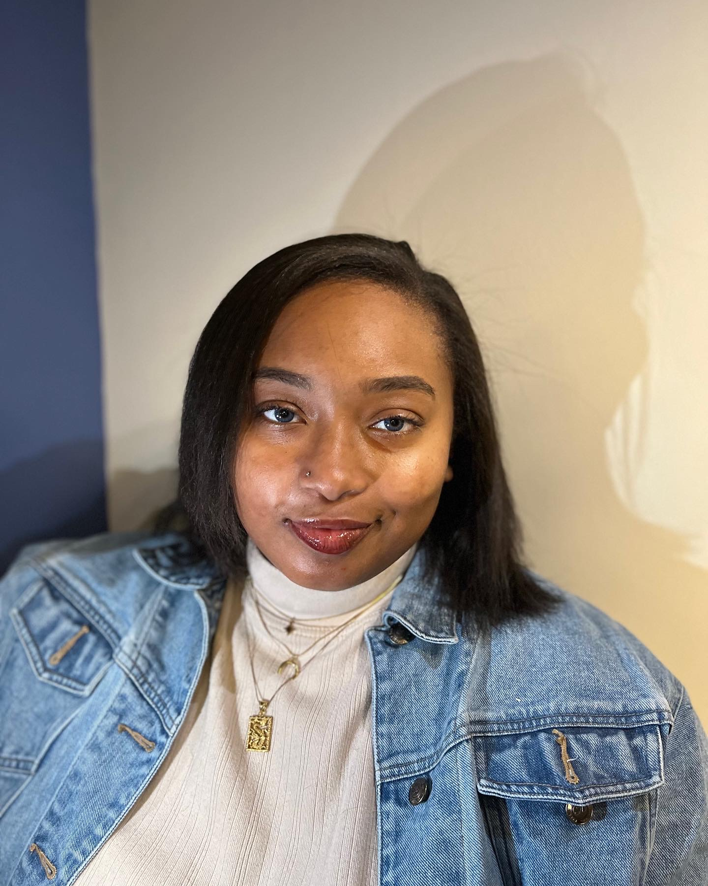
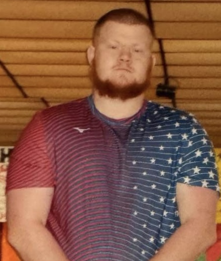

Meet Team Pearl, your in the skies traffic controllers!
Antonio Qerozi
Meet Antonio Qerozi, a kid born overseas whose pursuit of his goals ended up moving him to the United States! Spending his time focused on studying doesn't mean that's all there is to him, as he loves to go to the gym and play basketball with his friends when he isn't writing code. A simple life is the best life and Antonio agrees, staying diligent in his studies and working towards his future is how this young man spends his days.
Anthony Akintunde
Meet Anthony Akintunde, the die-hard C++ Developer. When he isn't developing software for the Coast Guard, he's spending his time writing turn-based games in C++ using SDL or OpenGL. He has a passion for machine learning and spends a lot of time reading about deep reinforcement learning. He fears two words: "Segmentation fault". If the computer is off for the day, you can find him at the gym or working on his car.
Joshua Pablo
Meet Joshua Pablo, a young student driven by the idea of success. He spends his time avidly in his studies, but when he is not doing that he is either spending his time playing the newest game he convinced his friends to buy, whipping up the next barbeque feast, or lifting way too much weight for his own good at the gym. It seems to be his Computer Science adventures are starting to kick off!
Emily Reyna

Meet Emily Reyna, your friendly neighborhood game tester extraordinaire at Bethesda Softworks. When she's not hunting bugs in epic titles like Starfield and Hi-Fi Rush, she's conquering the world of Computer Science as a senior at Old Dominion University. But wait, there's more! Emily's home is a mini zoo with 4 cats, 2 tortoises, and a leopard gecko – all of whom think they're her QA team. Outside the virtual realm, you can find her hiking trails or indulging in some mouth-watering KBBQ.
Gavin Clendenin

Meet Gavin Clendenin, a Navy veteran mechanic with a passion for problem solving. He lives with his girlfriend Torey and their standard poodle Lewis, and learning and growth are central to his life. Outside of work he enjoys 3D printing and painting miniatures for the tabletop game Warhammer 40000, or enjoying video games with his friends online.
Caitlyn Edwards
Meet Caitlyn Edwards, a senior at Old Dominion University who loves dogs, protein, and staying active. She spends most of her time at work and school, but when she has some downtime, she is at the gym or doing something fun with her dogs. When she graduates in the Fall of 2024, she plans to pursue a career in the Computer Science field, but using her skills to focus on modeling and simulation.
Alexis Jones
Meet Alexis Jones, a nerd who enjoys anime & spending time with friends. When shes not developing some of her side projects shes reading a book, learning how to cook new things, and learning new dances from different cultures. As a senior majoring in Computer Science, she hopes to simply secure a nice job in the technology workfield to help her take care of her mom.
Aaron Edwards
Meet Aaron Edwards, an engineer at Newport News Shipbuilding. He spends his spare time fishing, lifting weights, furthering his education, and gaming. He is currentlly at Old Dominion University for his second bachelors degree, this time in Computer Science.